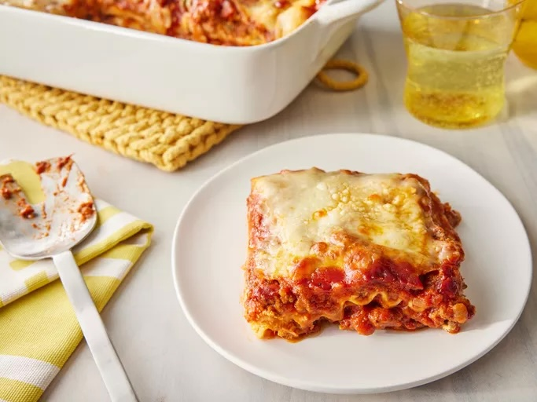

by John Chandler | Updated on May 22, 2024

When John Chandler submitted this lasagna recipe to Allrecipes more than 20
years ago, he had no idea how successful it would become. One of our top-performing
recipes of all time, World's Best Lasagna racks up more than 7 million views per year
and has ranked among the most popular lasagna recipes on the internet for two decades.
Unfortunately, John unexpectedly passed away at 53 years old — read all about his life
and legacy here.
Make our most popular lasagna today to find out what all the fuss is about!
The Allrecipes community adores this lasagna recipe because it's incredibly
customizable, so you can easily alter the ingredient list to suit your needs. If you
want to stay true to the original recipe, though, these are the ingredients you'll
need to add to your grocery list:
Here's a very brief overview of what you can expect when you make homemade
lasagna: